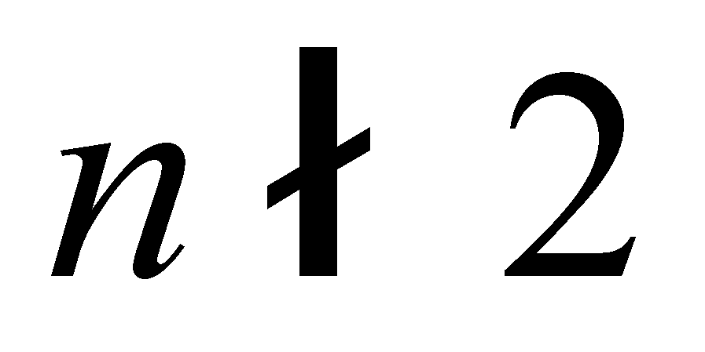
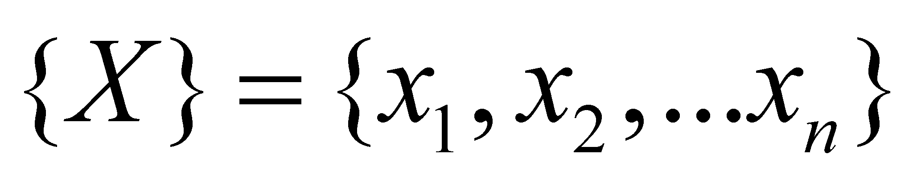

|
|
|
Unlike the generic term of set used in mathematics, which allows the existence of a set with a single element, or even with zero elements (void set), the objectual philosophy does not admit such virtual constructions in case of the set of objects, because in this instance, the singular object and the set of objects cannot be mistaken. For avoiding the confusions and for maintaining the relation with the existing mathematic language, the term of systemic set has been introduced, that is a term which is defined as a set with elements. When we are referring to set across this paper, it should be always understood that we are dealing with a systemic set.
On the other hand, the sets are complex objects under the meaning of the present paper, and just like any other object, they are confined (contained) in an abstract container (see the annex X.4), which stands for (represents) the object’s internal domain which is included within its boundaries. Because a set is a complex object, such reserved domains must exist for all the elements of the set (delimited by the elements boundaries) as well as the total reserved domain of the set as a whole, domain which represents the sum (union) of the elementary domains. According to the common mathematic language, a set X may be represented as follows:
 (X.3.9.1)
In this example, the global domain has its boundaries represented by brackets {} and the boundaries of the elementary domains are represented by means of comma. As for the internal domain of an object, either it is real or abstract, the objectual philosophy issues the term of container, which is minutely presented in the annex X.4. The correspondent of the set term from mathematics is the set of the abstract containers existent within the global boundaries.
These containers may be occupied or not. If a container is empty, we shall say that it is void, and if all the containers from the internal domain of a set are void, we shall have a void set. This objectual approach is valid for any type of existing mathematic object, either it is a number, matrix, tensor, geometrical object, image point, body etc. all of these having an internal domain associated with an abstract container, and that container must be contained into a syntactic value, that is either an internal ISS, or an external one, found outside the IPS which operates with it. The ones who are familiar with a programming language know very well that for each object from the structure of a program, a storage space must be previously assigned, in which that particular object will be stored. This reserved memory space is even the container for that object, the real container of the object’s syntactic component.
Copyright © 2006-2011 Aurel Rusu. All rights reserved.